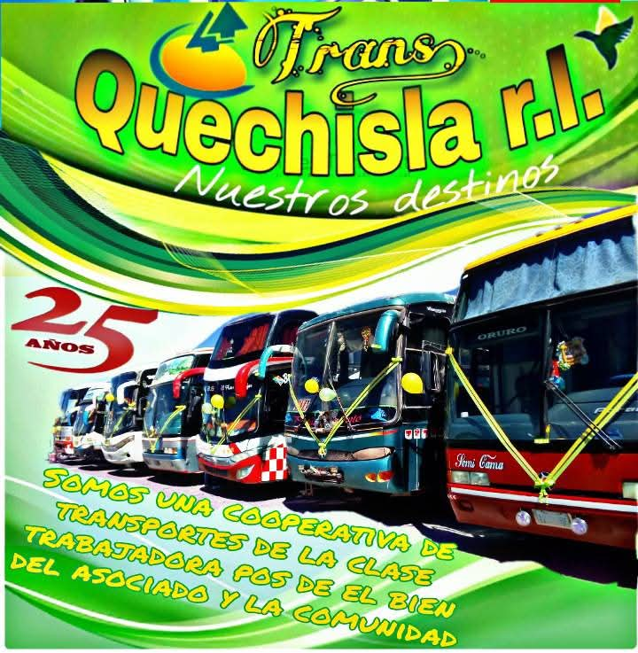
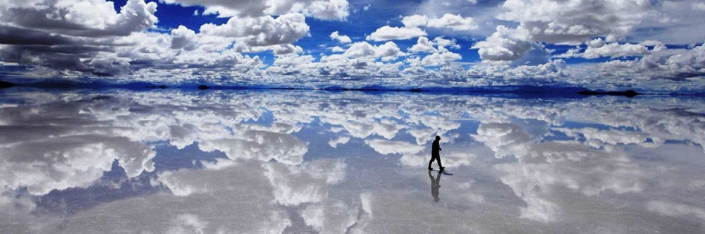
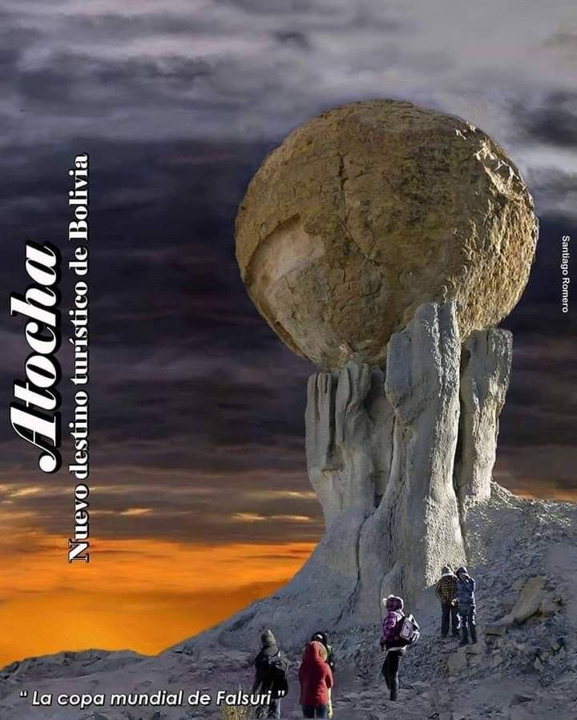
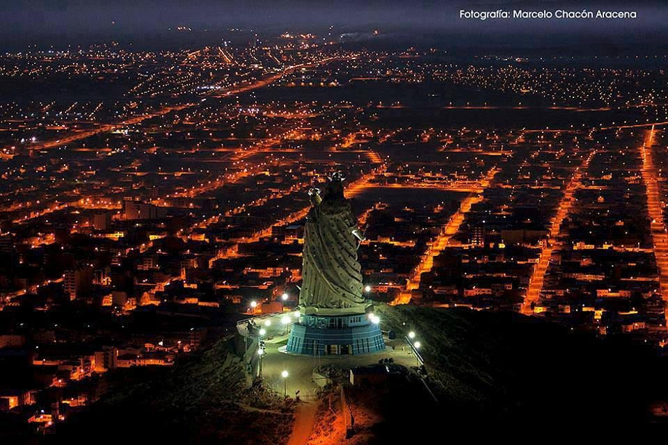
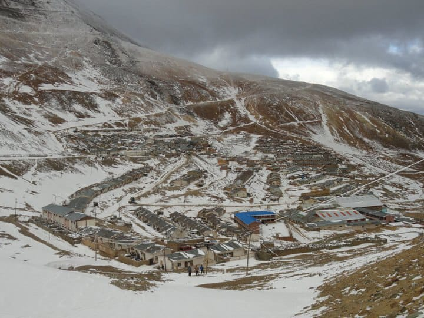

ESTAMOS MAS QUE LISTOS PARA SEGUIR LLEVANDOTE, A DONDE NECESITES IR EN ESTE MOMENTO, CONTINUA VIAJANDO CON NOSOTROS, TE LLEVAMOS A TU DESTINO

¡Vive la magia del Salar de Uyuni! Camina sobre el desierto de sal más grande del mundo, disfruta paisajes únicos y crea recuerdos inolvidables. ¡Viaja con nosotros y descubre lo extraordinario!

Si quieres conocer la copa del mundo en Atocha tienes que viajar con nosotros

¡Descubre Oruro, la capital del folklore boliviano! Vive su cultura, su Carnaval y la devoción al Socavón en un viaje lleno de tradición y emoción. ¡Acompáñanos y vive Oruro como nunca!

¡Aventúrate a Chorolque, la joya minera de Bolivia! Disfruta de paisajes impresionantes, conoce su historia minera y vive la tranquilidad del altiplano. ¡Viaja con nosotros y descubre un destino auténtico y único!